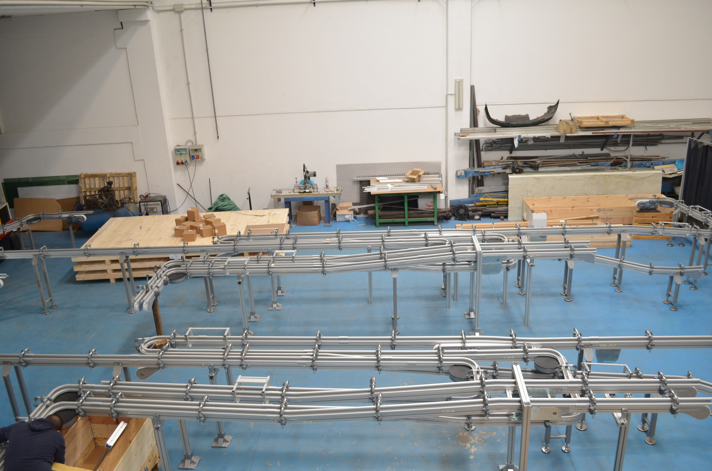

Codice interno: MOD-01

I nastri modulari in plastica sono composti da maglie assemblate tramite perni. Offrono grande robustezza, facilità di manutenzione e possibilità di sostituire solo i moduli danneggiati. Sono ideali per ambienti alimentari, logistici e industriali.
Realizziamo nastri modulari su misura per ogni impianto.
Contattaci